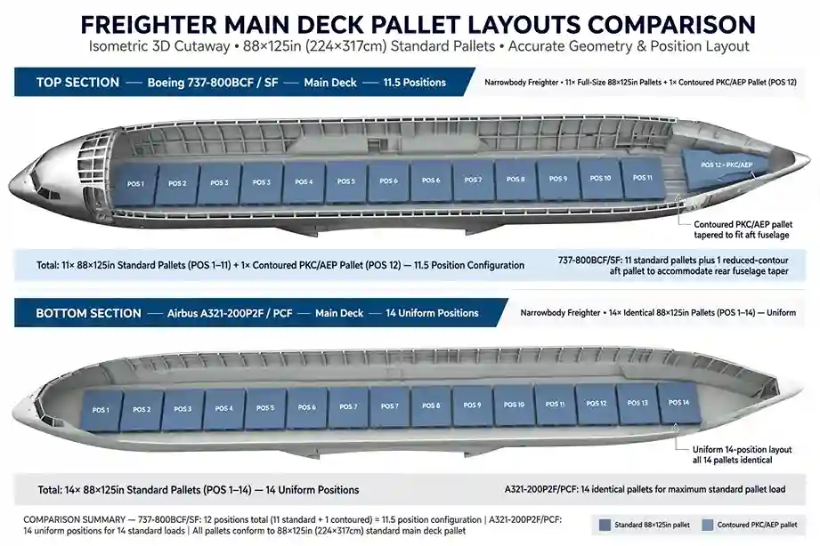

TL;DR: The A321P2F and 737-800BCF are the two leading next-generation narrowbody converted freighters, and the deciding factor between them is cargo density. The A321P2F offers 208.0 m³ of usable volume, 14 full-size main deck pallet positions, and containerized lower holds — the right choice for e-commerce and express networks that cube out. The 737-800BCF offers 185.0 m³, an 11+1 pallet layout, and manual loose-bulk lower holds — the right choice for routes into regional outstations without container-handling equipment. Match the airframe to your freight profile, not the other way around.
Why does cargo density decide which narrowbody freighter you lease?
For narrowbody freighter operators and network planners, selecting the right airframe comes down to one fundamental physical constraint: cargo density.
When evaluating Next-Generation single-aisle converted freighters, fleet planners typically look at the Boeing 737-800 Boeing Converted Freighter (737-800BCF/SF) and the Airbus A321 Converted Freighter (A321-200P2F/PCF). Both serve as modern replacements for legacy 737 Classic (-300F/-400F) and 757-200F aircraft, but their internal geometry, loading mechanics, and payload limits differ substantially.
Understanding whether your network's freight profile triggers a "cube-out" — exhausting internal volumetric space before reaching maximum structural weight — or a "weight-out" — reaching maximum payload weight before filling cubic capacity — is the single most critical factor determining which aircraft to lease.
-
Low-density parcels (under 100 kg/m³): Dominates cross-border e-commerce, express mail, and packaged consumer goods. Parcels fill the main deck cabin and lower holds long before the airframe approaches its structural weight limit, causing the aircraft to cube out. -
High-density freight (over 120 kg/m³): Typical for industrial machinery, automotive components, heavy general cargo, and raw materials. The aircraft reaches its maximum structural payload limit before filling its cubic space, causing it to weight out.
Because e-commerce parcel traffic continues to dominate regional air logistics growth, volumetric capacity has become the primary benchmark for next-generation narrowbody evaluation. For a broader view of the cargo-charter side that these freighters feed into, see urgent and time-critical cargo charter.
How much more usable volume does the A321P2F offer than the 737-800BCF?
When comparing total usable cubic volume, the Airbus A321P2F provides a clear size advantage over the Boeing 737-800BCF.
-
Boeing 737-800BCF: 185.0 m³ (6,540 ft³) total usable volume — split between 141.4 m³ (4,993 ft³) on the main deck and 43.7 m³ (1,543 ft³) in the lower belly holds. -
Airbus A321-200P2F: 208.0 m³ (7,348 ft³) of usable volume across the main deck and containerized lower holds, supplemented by an additional 5.9 m³ (208 ft³) aft bulk compartment.
The A321P2F provides approximately 28% more usable cargo volume than the 737-800BCF. For e-commerce integrators whose networks consistently cube out, this volumetric expansion allows operators to transport significantly more billable parcel volume per block hour without paying for a widebody airframe.

What are the main deck pallet layouts of the A321P2F and 737-800BCF?
Beyond total cubic meters, the physical geometry of the main deck determines operational efficiency during hub sorting and ULD loading.
The Boeing 737-800BCF layout. The 737-800BCF main deck is engineered to hold up to twelve unit load devices (ULDs). The typical configuration consists of 11 standard Code A (88″ × 125″ PAG/PMC) pallets loaded laterally, plus 1 undersized contoured container (PKC/AEP) fitted in the forward position near the 9G rigid barrier. Alternatively, it can accommodate 10 larger Code M (96″ × 125″) pallets plus one PKC position. Because the forward position cannot take a full-size 88″ × 125″ pallet, ground crews must build and sort a non-standard, smaller ULD specifically for that forward slot.
The Airbus A321-200P2F layout. The longer fuselage of the A321 allows conversion Supplemental Type Certificate (STC) providers to fit 14 full-size uniform (88″ × 125″) pallet/container positions on the main deck. This eliminates the need for sub-sized or contoured forward containers, enables uniform pallet building across the entire main deck, and simplifies weight-and-balance calculations while speeding up sorting operations at air logistics hubs.
How do payload and lower-hold handling compare between the two platforms?
While volume is critical for express cargo, structural weight capacity and lower-hold loading mechanics dictate overall operational versatility.
| Technical & Operational Metric | Boeing 737-800BCF | Airbus A321-200P2F |
|---|---|---|
| Max Structural Payload | 23.95 tonnes | 27.07 – 28.10 tonnes |
| Total Usable Volume | 185.0 m³ | 208.0 m³ (+5.9 m³ bulk) |
| Main Deck Pallet Layout | 11 Full + 1 PKC | 14 Full Uniform |
| Lower Hold Loading System | Loose Bulk (Manual) | Containerized (10 AKH) |
| Turnaround Time (Ground Dwell) | 60 – 90 Minutes | 30 – 45 Minutes |
Payload. The A321P2F offers higher weight capacity, delivering a maximum structural payload ranging from 27.07 tonnes (59,680 lb) to 28.10 tonnes (61,950 lb) depending on the STC and weight variant. The 737-800BCF provides a maximum structural payload of 23.95 tonnes (52,800 lb). That gives the Airbus platform roughly 22% higher structural payload capacity.
Lower-deck containerization vs. loose bulk. The A321P2F lower hold accommodates 10 × LD3-45W (AKH) containers plus 5.9 m³ of bulk cargo — the only single-aisle converted freighter capable of loading ULD containers on both the main deck and lower holds. Containerized lower holds accelerate apron turnarounds to 30–45 minutes, protect parcels from weather and handling damage, and enable direct ULD interlining with widebody freighters. For cargo profiles that lean on pharma or temperature-controlled consignments, that containerized lower hold also makes cold-chain handling practical — see our guide to pharma and cold-chain charter.
The 737-800BCF lower holds (43.7 m³) rely entirely on manual loose bulk loading. Ground crews stack individual boxes and mail sacks through narrow access doors. While this extends turn times to 60–90 minutes, it allows the 737-800BCF to operate into secondary regional outstations that lack specialized container loaders — which remains a decisive advantage for humanitarian and relief missions into austere airfields. See humanitarian relief flights for context on how that pattern plays out operationally.
Which airframe fits which trade lanes?
Network profile should drive the airframe choice, not the other way around:
| Operational Scenario | Recommended Platform | Key Driving Factors |
|---|---|---|
| High-volume regional e-commerce hubs (low density) | Airbus A321-200P2F | 208 m³ volume, 14 uniform positions, AKH lower-deck container loading |
| Secondary outstation feeder routes (un-equipped regional airports) | Boeing 737-800BCF | Loose-bulk loading, lower capital entry cost, wide MRO support network |
| Widebody hub interlining (connecting to widebody networks) | Airbus A321-200P2F | Direct ULD transfer to widebodies without repacking |
| Dense general freight & industrial express (high density) | Either platform (737-800BCF preferred for trip-cost) | Both handle dense cargo well; 737-800BCF offers lower trip fuel burn on short sectors |
For operators feeding a widebody trunk — say an Airbus A330-200F or similar — the A321P2F's containerized lower hold removes an entire repacking step at the hub. For operators pushing into secondary markets, the 737-800BCF's loose-bulk simplicity remains unmatched.
What should fleet planners conclude from this comparison?
If your network is volume-constrained (e-commerce & express): the Airbus A321P2F is the superior tool. Its 208.0 m³ volume, 14 uniform main-deck positions, and lower-deck AKH containerization maximize billable volume per flight and shorten apron turnaround windows.
If your network prioritizes route flexibility and secondary airport access: the Boeing 737-800BCF offers lower capital risk and operational simplicity. Its manual loose-bulk holds allow service to regional airports without container-handling equipment, backed by an extensive global maintenance and crew pool. For a broader framework covering turboprops through widebody freighters, see choosing the right cargo aircraft, and for the airframe itself, the Boeing 737-800BCF aircraft page.
A321P2F vs 737-800BCF
The Airbus A321P2F accommodates 14 full-size uniform (88″ × 125″) pallet or container positions on the main deck. In contrast, the Boeing 737-800BCF holds 11 standard Code A pallets plus 1 undersized contoured container (PKC/AEP) position.
The A321P2F provides 208.0 m³ (7,348 ft³) of usable cargo volume plus a 5.9 m³ bulk hold, offering approximately 28% more volume than the 737-800BCF's total 185.0 m³ (6,540 ft³).
Cubing out occurs when low-density freight (such as express e-commerce under 100 kg/m³) fills the physical cubic volume of an airframe before reaching its maximum structural payload limit. Weighting out occurs when heavy general cargo reaches maximum structural payload weight before filling total cubic space.
The A321P2F features containerized lower holds accommodating 10 AKH (LD3-45W) containers with ground turn times of 30 to 45 minutes. The 737-800BCF relies on manual loose-bulk loading in lower holds, requiring 60 to 90 minutes for apron ground dwell.